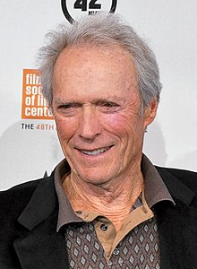

Clinton Eastwood Jr. (born May 31, 1930) is an American actor and film director. After achieving success in the Western TV series Rawhide, Eastwood rose to international fame with his role as the "Man with No Name" in Sergio Leone's Dollars Trilogy of spaghetti Westerns during the mid-1960s and as antihero cop Harry Callahan in the five Dirty Harry films throughout the 1970s and 1980s. These roles, among others, have made Eastwood an enduring cultural icon of masculinity.[4][5] Elected in 1986, Eastwood served for two years as the mayor of Carmel-by-the-Sea, California.

Eastwood's greatest commercial successes are the adventure comedy Every Which Way but Loose (1978) and its action comedy sequel Any Which Way You Can (1980).[6] Other popular Eastwood films include the Westerns Hang 'Em High (1968), The Outlaw Josey Wales (1976) and Pale Rider (1985), the action-war film Where Eagles Dare (1968), the prison film Escape from Alcatraz (1979), the war film Heartbreak Ridge (1986), the action film In the Line of Fire (1993), and the romantic drama The Bridges of Madison County (1995). More recent works include Gran Torino (2008), The Mule (2018), and Cry Macho (2021). Since 1967, Eastwood's company Malpaso Productions has produced all but four of his American films.